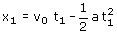
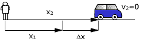
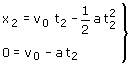
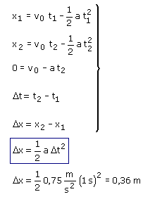

Este problema trata del recorrido parcial realizado en el último segundo de movimiento del coche
Ecuaciones del movimiento:
|
|
|
Parámetros v0 = 20 m/s, a = 0.75 m/s2 |

Aplicación: Comienza el recorrido parcial
Incógnitas: t1, x1
|
|
 |

Aplicación: Finaliza el recorrido parcial
Datos: v2 = 0 , Incógnitas: t2, x2
|  |
 |
El desplazamiento en el recorrido parcial es: Δx = x2 - x1
El intervalo de tiempo invertido en el recorrido es: Δt = t2 - t1 (Siendo Δt = 1 s)
Combinando las expresiones anteriores resulta un sistema con cinco incógnitas: t1, t2, x1, x2, Δx

¿Te das cuenta? Resulta un desplazamiento igual al que realizaría el coche en 1 s partiendo del reposo con aceleración 0.75 m/s2